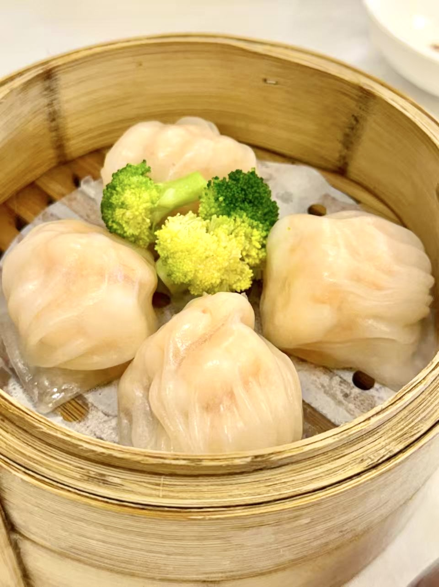

Har Gow 虾饺
Often called the queen of dim sum, har gow is the signature dish at many restaurants. Its glistening, translucent wrapper hides a generous filling of fresh shrimp. A proper har gow is just the right size to eat in one bite. The wrapper should be as thin as possible, yet strong enough to hold the filling without tearing. Eat it the moment it arrives, while it is still steaming hot, to enjoy the shrimp at its freshest. To judge a chef's skill, count the pleats. Tradition calls for at least seven, and more than ten is the mark of a true master.